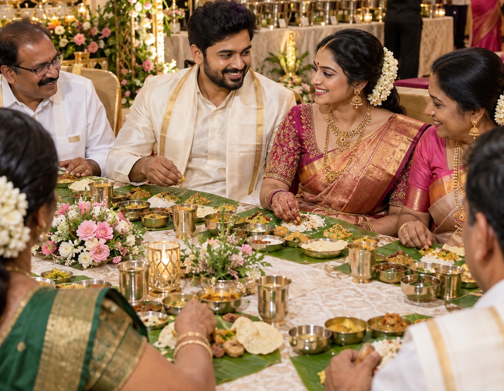
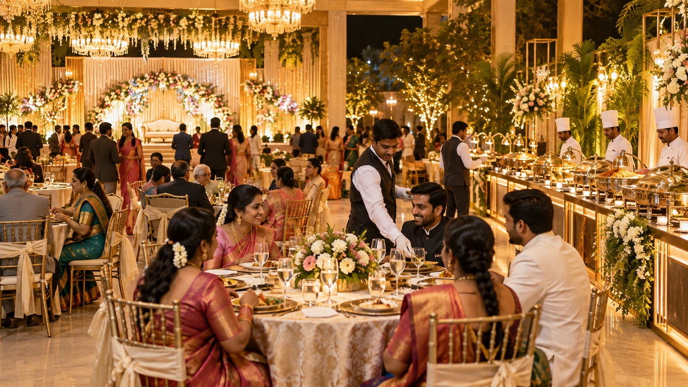
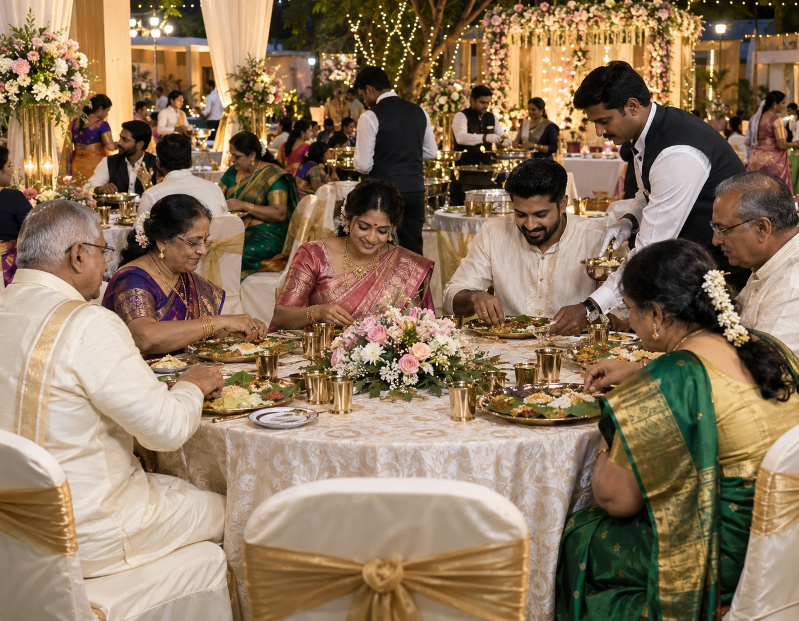
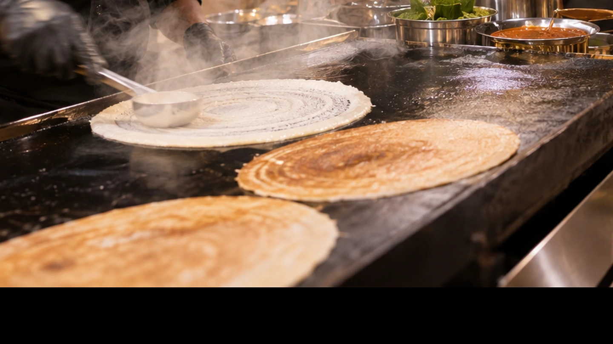

A Nichayathartham is an intimate family promise, not a smaller version of a wedding. Vellore Catering World plans the food around seer-varisai arrival, formal consent, ring exchange, elders’ blessings, sweets, tiffin or meal service and unhurried family hospitality.
Nichayathartham Catering in Vellore
Tamil/South Indian engagement functions. Plan the menu, service format and event logistics around your guest list and venue. For this betrothal, we relate the decision to the seer-varisai sequence, ring timing and the host family’s preferred meal opening.
We first understand how your families plan the formal acceptance, seer-varisai display, ring exchange and blessings. Once that sequence is clear, food timing becomes easier to plan and the function feels composed rather than rushed.
Begin with the betrothal sequence, not the menu count
At a Nichayathartham, the practical check is whether this supports elders, close-family movement and the short ceremonial schedule.
One practical decision That creates a practical basis for choosing programme delays with fewer last-minute changes. The recommendation is adapted to the family’s customs, the size of the hall and whether the function is morning, midday or evening.
Share the venue, approximate guest count, meal timing and food preferences. The catering scope can then be shaped around the real event rather than a generic package. We review this alongside thamboolam, sweet circulation, coffee service and the point at which general dining should begin.
When relatives arrive carrying ceremonial trays, the entrance area becomes busy. We plan welcome drinks and light refreshments so those guests are received comfortably without blocking the display or photography.
Seer-varisai arrival needs its own hospitality window
Clear planning before cooking helps reduce last-minute service problems. The final choice is made only after the couple’s families agree on ceremony timing, guest count and the service route inside the venue.
Keep the first service light until the formal exchange is complete
For many Nichayathartham functions, a small welcome item works better than opening the full meal immediately. It keeps attention on the family ceremony and leaves guests ready for the main dining period.
Treat the sweet tray as part of the ceremony
Sweets are often exchanged immediately after the formal acceptance or ring moment. We plan the quantity, tray presentation and circulation point so the sweet service feels ceremonial rather than like an ordinary dessert counter.
Plan thamboolam and catering as one guest-flow decision
Thamboolam distribution can create a second queue near the exit. We keep that movement separate from coffee, dessert and dining routes so families can hand over return items without congestion.
Seat parents and senior relatives close to the ceremony
Nichayathartham gatherings often include grandparents, maternal uncles, aunts and senior family members who should not have to move repeatedly between the stage and dining area. Seating and service routes are planned around them.
A short ceremonial delay can shift the entire service. We keep coffee and snack batches flexible and hold the main meal until the host confirms that the formal exchange and blessings are complete.
Use the muhurtham clock to time coffee, sweets and the meal
The exact scope is finalised with the quotation; these are the normal planning components. For a Tamil betrothal, this is planned as part of the family-hosting flow rather than copied from a large wedding banquet.
Check whether family hospitality needs a separate service station for Nichayathartham Catering.
Discuss multi-meal sequencing early if it can affect cost, timing or equipment for Nichayathartham Catering.
Include ceremony transitions in the event-day checklist for Nichayathartham Catering.
Link reception guest flow to the serving sequence rather than treating it as an isolated menu choice.
Record the decision on elder-friendly dining so the Nichayathartham Catering team has one clear instruction.
Review muhurtham timing with the host when finalising Nichayathartham Catering quantities and service flow.
Pongal, idli, dosa, vadai, vegetable preparations, rice, sambar, rasam, payasam and carefully chosen sweets can be arranged in a balanced sequence. The menu depends on whether the function is morning, midday or evening.
A Tamil betrothal menu can stay traditional without feeling heavy
Service can be scaled to suit the guest list, venue and timetable. This is checked during the venue and host review so ceremonial trays, elders’ seating and food service do not compete for the same space.
Morning Nichayathartham functions need fast, fresh tiffin production
For early functions we prioritise hot tiffin, chutney freshness, sambar holding and filter-coffee batch timing. Small production cycles keep breakfast tasting freshly made throughout the arrival window.
Evening betrothal functions benefit from a layered snack plan
An evening function may need a welcome beverage, one or two hot snacks, a sweet, coffee or tea, and dinner later. Staging these separately prevents guests from feeling that every item has arrived at once.
Keep ceremonial trays away from food-service traffic
Coconut, betel leaves, turmeric, flowers, fruits and gift trays need clean presentation space. We coordinate their placement with the family so buffet equipment, service staff and used vessels never crowd the ceremonial area.
Family photography should not delay every guest’s meal
The couple and close families may remain on stage for photographs after the ring exchange. We can open dining for senior guests and children while keeping immediate relatives informed about when their tables are ready.
A compact hall with close relatives may suit seated banana-leaf service, while a larger evening gathering may flow better with a controlled buffet. We recommend the format after checking guest count, venue width and ceremony timing.
Choose buffet or banana-leaf service based on the family format
Choose courses according to the time of day and how guests will be served. Its purpose is to keep the function intimate and orderly while the catering remains flexible around blessings and photographs.
Filter coffee deserves a proper service point
For Tamil family functions, coffee is often expected more than once. We plan milk, decoction, tumbler rotation and refill timing so the counter stays quick without sacrificing taste.
Live dosa works best as a selective counter, not a bottleneck
A dosa counter can add freshness to a breakfast or evening tiffin plan, but only when the pan count and serving queue match the guest volume. We size it to the function instead of adding it just for display.
Sweets can reflect both family tradition and serving practicality
Mysore pak, laddu, jangiri, badusha, kesari or payasam can be selected around family preference. We also consider how each sweet travels, plates and holds during a longer ceremony.
Small functions still need a clear back-of-house plan
Even when the guest list is modest, vessels, water, handwash access, waste movement and hot holding need defined locations. A tidy service area helps the front of the function remain elegant.
We nominate one service captain for the host family. Changes to ceremony timing, coffee release, senior seating or meal opening can then be handled through one clear point of contact.
The closest relatives should never be searching for the caterer
Keep one clear flavour direction or combine cuisines carefully. We use the host’s actual programme to decide the timing, quantity and staffing rather than relying on a generic event template.
Check whether muhurtham timing needs a separate service station for Nichayathartham Catering.
Link family hospitality to the serving sequence rather than treating it as an isolated menu choice.
Confirm elder-friendly dining for Nichayathartham Catering before the final event brief is closed.
Record the decision on ceremony transitions so the Nichayathartham Catering team has one clear instruction.
Link muhurtham timing to the serving sequence rather than treating it as an isolated menu choice.
A small child-friendly portion point or assisted service for younger guests reduces waiting and helps parents stay involved in the ceremony.
Children need simple portions before the dining rush
This is an illustrative starting point; every final menu should be confirmed separately. The service captain confirms this against the betrothal schedule before the kitchen and front-of-house teams lock their plan.
Plan water service around the stage and elders’ seating
Water should be easy to reach without placing bottles or dispensers in the ceremonial photo area. We position service points where guests actually pause and sit.
Thamboolam packing should be finished before the meal ends
Return gifts, betel leaves, nuts, turmeric or other family-prepared items are easier to distribute when the packing point is ready before guests begin leaving.
Use smaller food refills for an intimate family event
Nichayathartham guest flow is usually uneven: a wave arrives before the ceremony, another after it, and close relatives may dine last. Smaller refills keep food hot and reduce unnecessary holding.
A vegetarian-first plan often suits the ceremonial setting
Many families prefer a fully vegetarian spread for the betrothal day. We can keep it traditional, sattvic where required, and still offer enough variety through tiffin, curries, rice, sweets and beverages.
The décor may be modern, but the food service should still respect how the family wants elders served, sweets exchanged and ceremonial items handled. We adapt presentation without changing the function’s character.
Balance presentation with the family’s customs
The best menu is the one that fits your event rather than the longest menu. For this betrothal, we relate the decision to the seer-varisai sequence, ring timing and the host family’s preferred meal opening.
Create a separate checklist for the bride’s and groom’s families
Each side may have different arrival times, tray responsibilities and relatives who need assistance. A simple two-family checklist prevents last-minute confusion around food and hospitality.
Do not let the buffet dominate the ring-exchange space
Food counters should support the function visually and operationally. We keep them close enough for convenience but far enough that steam, queues and service noise do not distract from the ceremony.
Confirm the exact meal-opening signal
One family member should decide when the full meal opens. This avoids a situation where half the guests start dining while key relatives are still required on stage.
Plan sweet-box handover separately from plated sweets
If families are gifting packed sweets, we treat those boxes as a return item rather than mixing them with the dessert service. It keeps counts accurate and presentation neat.
The engaged couple may have little time between greetings and photographs. We make sure their meal can be served quickly when they are free rather than expecting them to join a queue.
Keep the couple’s meal simple to access
Counters should add theatre without creating queues or slowing the main meal. At a Nichayathartham, the practical check is whether this supports elders, close-family movement and the short ceremonial schedule.
Use family hospitality to guide staffing and replenishment choices for Nichayathartham Catering.
Link family hospitality to the serving sequence rather than treating it as an isolated menu choice.
Record the decision on family hospitality so the Nichayathartham Catering team has one clear instruction.
Link elder-friendly dining to the serving sequence rather than treating it as an isolated menu choice.
As guests leave, coffee, water, thamboolam and sweet-box handover should remain orderly. The closing service is part of the family’s final impression of the function.
A calm ending matters as much as a strong welcome
Venue layout, guest profile and meal duration influence the right format. The recommendation is adapted to the family’s customs, the size of the hall and whether the function is morning, midday or evening.
Link reception guest flow to the serving sequence rather than treating it as an isolated menu choice.
Discuss ceremony transitions early if it can affect cost, timing or equipment for Nichayathartham Catering.
Link elder-friendly dining to the serving sequence rather than treating it as an isolated menu choice.
Use muhurtham timing to guide staffing and replenishment choices for Nichayathartham Catering.
Guest count alone is not enough. We factor ceremony duration, tiffin versus meal, sweet exchange, coffee frequency, live counters, service style and venue infrastructure into the final plan.
Build the quote around the actual betrothal programme
Capacity depends on menu complexity, venue facilities, staffing and service window. We review this alongside thamboolam, sweet circulation, coffee service and the point at which general dining should begin.
Home, mini-hall and marriage-hall betrothals need different service models
A home function may need compact equipment and plated service, a mini hall may favour assisted buffet, and a large marriage hall can support multiple counters. We adapt the operation to the space.
Food safety stays invisible but active throughout the function
Hot dishes are held at service temperature, dairy sweets and cut items are controlled carefully, and refill vessels are rotated rather than topped up indefinitely.
One final family review prevents avoidable surprises
Before event day we reconfirm ceremony time, final headcount, special diets, sweet quantity, coffee plan, service opening, thamboolam location and the host-side decision maker.
The goal is a service that feels like a family function: attentive, traditional where it matters, flexible around rituals and polished enough that the hosts can stay present for the occasion.
Nichayathartham hospitality should feel personal, not mass-produced
A simple sequence keeps decisions clear. The final choice is made only after the couple’s families agree on ceremony timing, guest count and the service route inside the venue.
Give senior relatives a seated service option
If grandparents or elderly relatives prefer not to join a queue, we can serve their first course at the table and keep the rest of the dining area moving normally.
Keep the family-host desk close to the ceremony, not the buffet
Questions about trays, gifts, photographs and ritual timing should reach the family coordinator without pulling them into the dining queue.
Separate coffee vessels from ceremonial brassware
Tamil functions use a lot of polished brass and steel. We keep beverage equipment clearly segregated from lamps, trays and ceremonial vessels so nothing is mixed up during cleanup.
Count seer trays before the hall becomes crowded
A quick tray count and placement check before guest arrival helps the family confirm that fruits, coconuts, flowers, sweets and gift items are all present and arranged.
Reserve one clean table for ring trays and documents
The ring box, garlands, family gifts and any formal papers should have a dedicated clean surface rather than being moved between dining tables.
Water, juice or a small welcome drink can be served while relatives gather, without creating food queues before the formal family moment begins.
Use the pre-ceremony period for quiet beverage service
Discuss food safety expectations at the same time as menu choices. For a Tamil betrothal, this is planned as part of the family-hosting flow rather than copied from a large wedding banquet.
Check whether family hospitality needs a separate service station for Nichayathartham Catering.
Discuss ceremony transitions early if it can affect cost, timing or equipment for Nichayathartham Catering.
Link muhurtham timing to the serving sequence rather than treating it as an isolated menu choice.
Keep ceremony transitions practical for the available setup space during Nichayathartham Catering.
Review ceremony transitions with the host when finalising Nichayathartham Catering quantities and service flow.
The ceremonial sweet should be easy for elders to offer and easy for staff to circulate. Bite-sized pieces are usually neater than elaborate plated desserts at this stage.
Make the first sweet easy to serve by hand
Good service starts before the food reaches the venue. This is checked during the venue and host review so ceremonial trays, elders’ seating and food service do not compete for the same space.
Hold the main buffet until the blessing sequence settles
If elders are still blessing the couple or family photos are underway, opening the full buffet too early can split attention and create unnecessary movement.
Use flowers and vessels that photograph well beside food
Nichayathartham décor often uses jasmine, roses, brass lamps and silk. We keep buffet styling complementary so food counters do not look visually disconnected from the ceremony.
Plan a compact service team for home betrothals
A home-based Nichayathartham needs fewer people but better coordination. Staff movement, vessel placement and cleanup must respect limited space and family activity.
For mini halls, keep one route open from stage to dining
The couple and immediate family may move repeatedly between stage, elders and dining. A clear route prevents them from cutting through guest queues.
Placing coffee, tea and water away from the food line reduces congestion and lets guests take refreshments without joining the full meal queue.
For larger halls, split beverages from the main buffet
Different people own production, coordination and guest-facing service. Its purpose is to keep the function intimate and orderly while the catering remains flexible around blessings and photographs.
Keep breakfast chutneys in smaller fresh batches
Coconut chutney and similar items are best replenished frequently rather than displayed in large quantities for a long morning function.
Time vadai and dosa around actual guest arrival
Hot tiffin loses its appeal if produced too early. We estimate the first major arrival wave and adjust frying and griddle production to that point.
Use one family-approved sweet list
When both families suggest sweets, quantities can quickly duplicate. A single approved list avoids over-ordering and keeps ceremonial and dessert portions clear.
If an elder needs a low-spice or restricted plate, we arrange it discreetly through the service captain rather than using prominent labels in the dining hall.
Label special-diet plates privately with the service captain
Representative stock photographs (free Pexels licence) shown for planning inspiration; they are not presented as photographs of past client events. We use the host’s actual programme to decide the timing, quantity and staffing rather than relying on a generic event template.

Close family dining together after a Tamil betrothal ceremonyNichayathartham ceremony, family dining, buffet and live dosa service
If the family photo session runs long, a controlled backup coffee batch helps serve relatives who stay after the main guest wave without compromising freshness.
Keep a backup coffee batch for delayed photographs
The photos below are representative stock images for presentation ideas, not records of past client events. The service captain confirms this against the betrothal schedule before the kitchen and front-of-house teams lock their plan.

Nichayathartham function hall with seated guests and organized buffet service

Elders and close relatives enjoying assisted table service at a betrothal function

Fresh dosa preparation for a Nichayathartham tiffin and live counter service
The couple may still be occupied on stage. Senior guests and families with children can begin dining at the host’s signal while a separate plate is reserved for the couple.
Plan the dining start for the guests, not only the couple
No client event is invented here; this transparent sample shows the planning logic. For this betrothal, we relate the decision to the seer-varisai sequence, ring timing and the host family’s preferred meal opening.
Illustrative planning scenario: a 689-guest wedding in Vellore with buffet service, a 5-part menu and one live counter. The planning focus would be ceremonial timing, family hospitality and a smooth dining flow. This is an example workflow, not a claim about a specific past client event. At a Nichayathartham, the practical check is whether this supports elders, close-family movement and the short ceremonial schedule.
Hot boxes, fryers and coffee boilers should not sit beside flower trays or ritual décor. We separate heat-producing equipment from the ceremonial zone.
Protect fresh flowers and ceremonial items from kitchen heat
This build intentionally contains no fabricated testimonials. Replace this notice only with feedback you have permission to publish. The recommendation is adapted to the family’s customs, the size of the hall and whether the function is morning, midday or evening.
Use discreet waste collection in intimate halls
Smaller family functions feel untidy quickly if used cups and plates accumulate. Frequent quiet clearance keeps the hall presentable without drawing attention.
Guests should find the handwash area easily after dining, while wet traffic and queues stay outside the ceremonial photo space.
Keep handwash access obvious but away from the stage
The website does not hard-code a star rating or review count because those values change. We review this alongside thamboolam, sweet circulation, coffee service and the point at which general dining should begin.
Use the live Google result to view current public feedback before booking. The final choice is made only after the couple’s families agree on ceremony timing, guest count and the service route inside the venue.
Some families prefer banana leaf even for a compact betrothal, while others want plated tiffin or buffet. The service setup changes substantially, so this is confirmed early.
Confirm whether the family wants leaf service or plated tiffin
Confirm access, water, power, loading space and dining layout before finalising the service plan. For a Tamil betrothal, this is planned as part of the family-hosting flow rather than copied from a large wedding banquet.
Link elder-friendly dining to the serving sequence rather than treating it as an isolated menu choice.
Link reception guest flow to the serving sequence rather than treating it as an isolated menu choice.
Match muhurtham timing to the guest count, venue and timing for Nichayathartham Catering.
Keep reception guest flow practical for the available setup space during Nichayathartham Catering.
Review family hospitality with the host when finalising Nichayathartham Catering quantities and service flow.
Close relatives may arrive after the formal exchange. We retain a small quantity of hot food so they are welcomed properly without reopening the entire service line.
Set aside a small holding area for late-arriving relatives
Availability and travel logistics are confirmed for the event date. This is checked during the venue and host review so ceremonial trays, elders’ seating and food service do not compete for the same space.
Include reception guest flow in the event-day checklist for Nichayathartham Catering.
Confirm elder-friendly dining for Nichayathartham Catering before the final event brief is closed.
Record the decision on ceremony transitions so the Nichayathartham Catering team has one clear instruction.
Include family hospitality in the event-day checklist for Nichayathartham Catering.
Match muhurtham timing to the guest count, venue and timing for Nichayathartham Catering.
Record the decision on reception guest flow so the Nichayathartham Catering team has one clear instruction.
Business base: 90/32, Subramanya Swamy Koil St, Kosapet, Vellore, Tamil Nadu 632001. Its purpose is to keep the function intimate and orderly while the catering remains flexible around blessings and photographs.
The photography team often works continuously through the ring exchange. A planned meal window for them avoids last-minute requests during peak guest service.
Coordinate the photographer’s break with the meal window
A responsible quote uses your actual requirements instead of an unrealistic universal per-plate figure. We use the host’s actual programme to decide the timing, quantity and staffing rather than relying on a generic event template.
Avoid oversized decorative food displays for a family function
Nichayathartham catering should feel refined, not excessive. We favour neat presentation, fresh refills and meaningful variety over large decorative quantities.
Use traditional savouries where they fit the time of day
Bajji, bonda, mini vadai, murukku or other savouries can suit the function well, but the selection should support the main meal rather than compete with it.
Keep dessert simple after a sweet-heavy ceremony
If the families already exchange multiple sweets, one lighter dessert or payasam may be enough after the meal. This avoids unnecessary repetition.
Prepare a small emergency tray for the couple’s family room
Water, coffee, a light snack and a few sweets can be kept ready for immediate relatives who are occupied with ceremony arrangements and cannot reach the dining area.
Before guests arrive, the service team is told which trays are ceremonial, who should be served first, where footwear or gifts are kept, and which areas should remain undisturbed.
Plan staff briefing around family customs
Package names describe scope only; final pricing follows the confirmed menu and event details. The service captain confirms this against the betrothal schedule before the kitchen and front-of-house teams lock their plan.
Use the final headcount to control sweets and coffee accurately
For an intimate function, overproduction is noticeable. We use the final guest estimate to set practical sweet pieces, milk volume, coffee decoction and tiffin batches.
Keep one vegetarian service line fully protected
If the entire function is vegetarian, all equipment follows that plan. If a mixed menu is requested, vegetarian dishes and utensils are kept clearly separated.
Treat the couple’s parents as hosts, not service coordinators
Parents should be able to receive relatives and participate in rituals. Our captain handles catering questions so the family does not spend the function solving operational details.
After dining, we confirm leftover handling, returnable vessels, family sweets, packed food if requested and any items stored near the service area.
Use a short post-event handover checklist
Useful answers before you send an enquiry. For this betrothal, we relate the decision to the seer-varisai sequence, ring timing and the host family’s preferred meal opening.
How is the final plan for Nichayathartham Catering confirmed?
For ceremonial timing, family hospitality and a smooth dining flow, earlier booking gives more time for menu planning, staffing and venue coordination. Share your event date as soon as it is reasonably fixed so availability can be checked. At a Nichayathartham, the practical check is whether this supports elders, close-family movement and the short ceremonial schedule.
When should elder-friendly dining be discussed for Nichayathartham Catering?
Yes. Menu depth, spice level, vegetarian or non-vegetarian balance, service style, sweets, beverages and live counters can be adjusted after discussing your guests and venue. The recommendation is adapted to the family’s customs, the size of the hall and whether the function is morning, midday or evening.
How should multi-meal sequencing be handled for Nichayathartham Catering?
Enquiries can be planned for intimate functions as well as larger gatherings. The quotation and staffing plan depend on final guest count, menu, venue access and service format. We review this alongside thamboolam, sweet circulation, coffee service and the point at which general dining should begin.
How is the final plan for Nichayathartham Catering confirmed?
A page-specific priority It also changes how the team handles event-day contact during setup and service. The final choice is made only after the couple’s families agree on ceremony timing, guest count and the service route inside the venue.
What venue detail matters most for Nichayathartham Catering?
No single price is accurate for every event. Guest count, dishes, service staff, live counters, equipment, venue distance and service style all change the final quotation. For a Tamil betrothal, this is planned as part of the family-hosting flow rather than copied from a large wedding banquet.
A well-timed cup of filter coffee before guests leave can suit a Tamil betrothal beautifully, especially when thamboolam is handed over at a separate point.
Make the final coffee service part of the farewell
The goal is consistency, suitability and a pleasant guest experience. This is checked during the venue and host review so ceremonial trays, elders’ seating and food service do not compete for the same space.
Keep the service language courteous and family-friendly
Staff are briefed to guide elders, answer simple menu questions and serve without rushing guests. An intimate function benefits from calm interaction more than formal banquet behaviour.
Scale live counters only when they add real value
A live dosa, appam or snack counter should earn its place through freshness and guest enjoyment. We avoid adding counters that only create queues in a small hall.
Check parking-to-hall walking distance for senior guests
If the venue entrance is far from parking, early water service and convenient elder seating become more important. We include this in the venue walk-through.
Gift bags, trays and return items often occupy the same side of a small hall where caterers would naturally place equipment. We agree on zones before setup begins.
Keep family gift areas clear during buffet setup
Send the three essentials first; the discussion can continue on WhatsApp. Its purpose is to keep the function intimate and orderly while the catering remains flexible around blessings and photographs.
Include your venue and approximate guest count in the WhatsApp conversation after the form opens. We use the host’s actual programme to decide the timing, quantity and staffing rather than relying on a generic event template.
Use the ceremony end-time to plan the final hot batch
Instead of cooking every item at once, the kitchen times the last hot batch around the expected completion of blessings and photographs.
If the family wants remaining food packed, one designated person should receive it. This keeps quantities accountable and avoids multiple informal handovers.
Confirm who receives packed leftovers
Call or WhatsApp for date availability and a menu discussion. At a Nichayathartham, the practical check is whether this supports elders, close-family movement and the short ceremonial schedule.
Address90/32, Subramanya Swamy Koil St, Kosapet, Vellore, Tamil Nadu 632001
The last guests are often close relatives. We keep water, coffee and a reduced food service available long enough for them to dine comfortably before closing the counters.
Plan for a graceful close rather than an abrupt shutdown
Open the map for directions; event service is coordinated separately to your venue. The recommendation is adapted to the family’s customs, the size of the hall and whether the function is morning, midday or evening.
The best outcome is simple: the ceremonial moments happen on time, elders are comfortable, guests are fed well and the host family does not have to supervise the catering operation.
Nichayathartham service should leave the family free to celebrate
Every catering page uses the same four core service routes for a simple, consistent conversion path. We review this alongside thamboolam, sweet circulation, coffee service and the point at which general dining should begin.
Traditional and contemporary wedding menu planning. The final choice is made only after the couple’s families agree on ceremony timing, guest count and the service route inside the venue.
Flexible party food for children, adults and family gatherings. For a Tamil betrothal, this is planned as part of the family-hosting flow rather than copied from a large wedding banquet.
Traditional menu planning around ritual timing and family service. This is checked during the venue and host review so ceremonial trays, elders’ seating and food service do not compete for the same space.
Browse every catering type available in the full Vellore service catalogue. Its purpose is to keep the function intimate and orderly while the catering remains flexible around blessings and photographs.
Planning guides. We use the host’s actual programme to decide the timing, quantity and staffing rather than relying on a generic event template.
Nichayathartham Catering: a plan built around muhurtham timing
Use these guides to prepare your guest count, budget questions and service preferences before enquiring. The service captain confirms this against the betrothal schedule before the kitchen and front-of-house teams lock their plan.
A practical planning checklist covering guest count, venue access, menu timing, service style and backup arrangements. For this betrothal, we relate the decision to the seer-varisai sequence, ring timing and the host family’s preferred meal opening.
Understand the main variables that influence catering quotations, from guest count and menu depth to counters, staffing and logistics. At a Nichayathartham, the practical check is whether this supports elders, close-family movement and the short ceremonial schedule.
A menu-planning guide for balancing courses, dietary needs, service time, regional preferences and guest comfort. The recommendation is adapted to the family’s customs, the size of the hall and whether the function is morning, midday or evening.
This page is built around Tamil betrothal customs: seer-varisai handling, formal family acceptance, ring exchange, elders’ blessings, thamboolam, sweets, tiffin, filter coffee and a smaller, more intimate dining rhythm.
How this page is tailored specifically for Nichayathartham
This section is written specifically It uses a different set of operational checkpoints, venue questions and guest-service priorities so the page is not a copy of another catering or locality page. The final choices still depend on the confirmed venue, guest count, menu and event schedule. We review this alongside thamboolam, sweet circulation, coffee service and the point at which general dining should begin.
1. Seer-varisai staging before guests gather
Keep coconut, fruits, betel leaves, turmeric, flowers, silk and gift trays together in a clean ceremonial zone before the formal family exchange begins.
2. Thamboolam packing and exit flow
Prepare return items early and position the handover point away from the buffet so departing guests do not interrupt dining service.
3. Ring-exchange sweet circulation
Release ceremonial sweets immediately after the ring moment or family acceptance, according to the host’s chosen sequence.
4. Parents and elders first-service plan
Reserve easy seating and, where useful, assisted table service for senior relatives who should not have to stand in a buffet queue.
5. Muhurtham and photography buffer
Keep a small timing buffer after the formal exchange because blessings and family photographs almost always run longer than expected.
6. Filter-coffee batch schedule
Prepare decoction and hot milk in controlled batches so coffee remains fresh during arrivals, post-ceremony conversation and the end of the meal.
7. Ceremonial tray protection
Keep catering vessels, steam and staff movement away from the seer-varisai and ring trays so ritual items remain clean and photograph-ready.
8. Vegetarian and sattvic confirmation
Confirm onion, garlic, fasting or family-specific ingredient restrictions before purchasing so the menu respects the household’s tradition.
9. Sweet-box count and handover
Separate packed sweet boxes from plated dessert quantities and assign one family-side handover point to avoid count confusion.
10. Children’s snack and water timing
Offer simple portions and water access early so parents with young children can remain involved in the ceremony.
11. Couple and close-family meal window
Plan a flexible plate or reserved seating option because the couple and immediate relatives often finish photographs after other guests begin dining.
12. Post-ceremony dining wave
Open the main meal only after the host’s signal, then use small refills to handle elders, general guests and close family in comfortable waves.